Full HiDPI support
This release provides complete support for high DPI environments. In addition to scaling the fonts and some insets, which was done in previous releases, this release provides automatic scaling for all relevant visual elements. Below are a few examples of high DPI support.
The linear elements such as borders and focus rings, including insets, dash length, dash gap and stroke width:
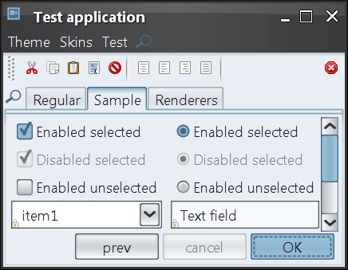Slider visuals, including thumb size, thumb border stroke width, tick length and tick stroke width:
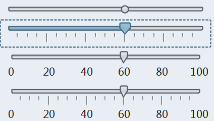Table visuals, including renderer insets, grid stroke width, header border stroke width and header insets:
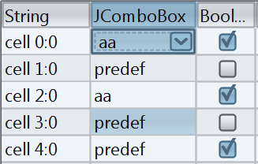Vertical size and text alignment of text components, comboboxes and spinners:
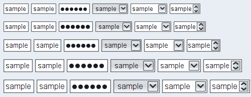Font policy for Gnome desktops
The new default Gnome font policy automatically picks up the font family, style and size that match the current desktop settings.
Here is a screenshot of a test application running under Ubuntu with default font settings (Sans family, 10 points, 96 DPI setting):
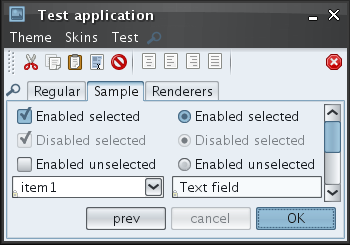Here is a screenshot of a test application running under Ubuntu with custom font settings (Sans family, 10 points, 144 DPI setting):
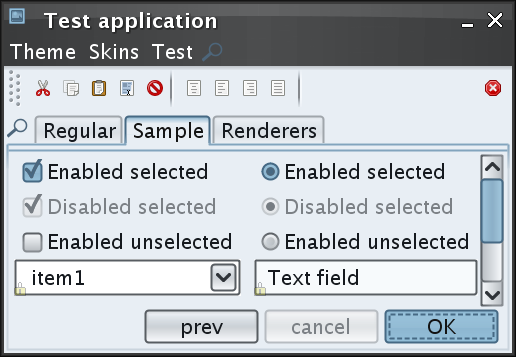Here is a screenshot of a test application running under Ubuntu with custom font settings (TSCu_Times family, 9 points, 144 DPI setting):
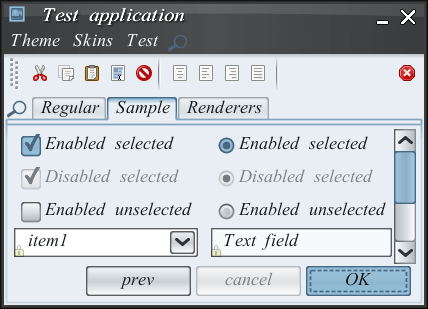Scaling font policy
The new APIs in
org.jvnet.substance.fonts.SubstanceFontUtilities
allow emulating scaled resolution settings without changing the actual
DPI / resolution of the monitor.
The following API returns a scaled version of the default platform-specific font policy. It can be used to pass to the setFontPolicy() API.
/**
* Returns scaled platform-specific font policy.
*
* @param scaleFactor
* Scale factor. Should be positive.
* @return Scaled platform-specific font policy.
*/
public static FontPolicy getScaledFontPolicy(float scaleFactor)
The following API returns the default platform-specific font policy. It can be used to pass to the setFontPolicy() API.
/**
* Returns the default platform-specific font policy.
*
* @return Default platform-specific font policy.
*/
public static FontPolicy getDefaultFontPolicy()
New Creme Coffee skin
The new Creme Coffee skin is based on the existing Creme skin and the Ubuntu’ish brown active theme. To use it in your application, you have the following three options:
- -Dswing.defaultlaf=org.jvnet.substance.skin.SubstanceCremeCoffeeLookAndFeel
- UIManager.setLookAndFeel(new SubstanceCremeCoffeeLookAndFeel())
- UIManager.setLookAndFeel("org.jvnet.substance.skin.SubstanceCremeCoffeeLookAndFeel");
The screenshots below show a frame under the Creme Coffee skin:
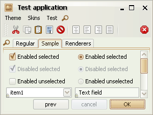 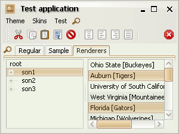Inner border painters
New core border painters provide visuals of lighter inner borders. You can use the following core border painters in your custom skins:
org.jvnet.substance.border.ClassicInnerBorderPainterorg.jvnet.substance.border.FlatInnerBorderPainterorg.jvnet.substance.border.GlassInnerBorderPainter
In addition, you can extend the
org.jvnet.substance.border.InnerDelegateBorderPainter
to simplify writing a custom inner border painter. Note that due to introduction of this feature,
the existing custom border painters should be changed as described in the
migration guide.
Some of the existing core skins have been changed to use the new border painters. Here are some examples. The following two screenshots show the Autumn skin in the previous release (on the left) and in the current release (on the right). Note that the "current" screenshot also shows the new tabbed pane content border (see the next entry).
 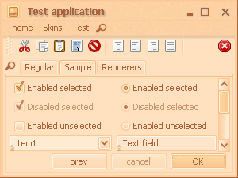
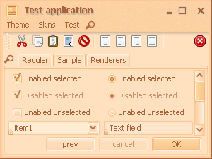
The following two screenshots show the Creme skin in the previous release (on the left) and in the current release (on the right). Note that the "current" screenshot also shows the new tabbed pane content border (see the next entry).
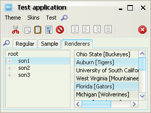 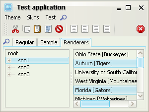The following two screenshots show the Raven Graphite Glass skin in the previous release (on the left) and in the current release (on the right). Note that the "current" screenshot also shows the new tabbed pane content border (see the next entry).
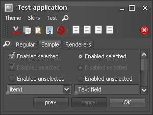 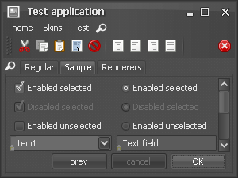Tabbed pane content borders
The default appearance of tabbed pane content border has been changed in favor of a more modern approach (found in Firefox 2.0, Internet Explorer 7.0, Nimbus, Aqua and Quaqua).
The following two screenshots show the Autumn skin in the previous release (on the left) and in the current release (on the right). Note that the "current" screenshot also shows the new inner border border (see the previous entry).
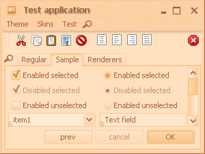
The following two screenshots show the Business Black Steel skin in the previous release (on the left) and in the current release (on the right).
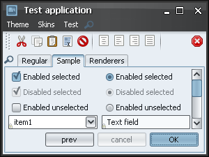 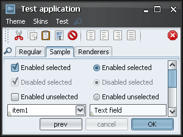The following two screenshots show the Creme skin in the previous release (on the left) and in the current release (on the right). Note that the "current" screenshot also shows the new inner border border (see the previous entry).
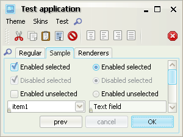 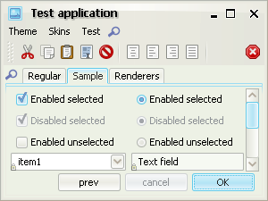In addition to the new default visual appearance, you can use the new
TABBED_PANE_CONTENT_BORDER_KIND
client property is for. The default value is
TabContentPaneBorderKind.DOUBLE_FULL which
is what the next screenshot (and the screenshots above) show:
In order to use the old painting, use the
TabContentPaneBorderKind.SINGLE_FULL value:
If you have nested tabbed panes, you can use either
TabContentPaneBorderKind.DOUBLE_PLACEMENT value:
or the TabContentPaneBorderKind.SINGLE_PLACEMENT
value:
Transition-aware animating icons
Control icons (icons created internally by Substance, such as title pane button icons, arrow icons for combo boxes, scroll bars, spinners etc) are animated when the relevant control transitions between different states.
Here is a small video under the Business Black Steel skin that shows how the foreground color of title pane button icons transitions between white and black colors according to the button states (default and rollover in this example):
Here is a small video under the Magma skin that shows how the foreground color of combo box arrow icons transitions between white and dark red colors according to the button states (default and rollover in this example):
New version of Xoetrope color wheel
The latest version of Xoetrope color wheel provides an option to adjust the color wheel brightness and saturation by Ctrl-mouse scrolling the matching sliders on the color chooser panel.